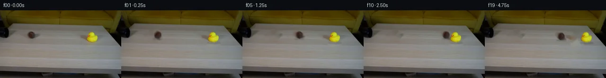

![首帧]()

Round 00
2026-11-04T19:26:34.467004+00:00像素候选变化代码 +208/−0inspection 更新
pixels 870187e2d0dfd4c6 · code 38099028c32bcba0
查看本轮 generate.py 真实 diff
--- previous/generate.py
+++ current/generate.py
@@ -0,0 +1,208 @@
+#!/usr/bin/env python3
+"""Generate the PixelWorld continuation with local pixel compositing only."""
+
+from pathlib import Path
+
+import cv2
+import numpy as np
+from PIL import Image, ImageDraw
+
+import artifact_io
+
+
+ROOT = Path(__file__).resolve().parent
+H, W = 144, 256
+
+
+def largest_filled_component(binary: np.ndarray) -> np.ndarray:
+ """Return a filled mask for the largest external contour."""
+ contours, _ = cv2.findContours(binary.astype(np.uint8), cv2.RETR_EXTERNAL,
+ cv2.CHAIN_APPROX_SIMPLE)
+ if not contours:
+ raise RuntimeError("Object segmentation produced no contour")
+ contour = max(contours, key=cv2.contourArea)
+ result = np.zeros(binary.shape, np.uint8)
+ cv2.drawContours(result, [contour], -1, 255, cv2.FILLED)
+ return result
+
+
+def soft_object_mask(image: np.ndarray, kind: str) -> np.ndarray:
+ """Segment one supplied-frame object within a conservative local ROI."""
+ hsv = cv2.cvtColor(image, cv2.COLOR_RGB2HSV)
+ if kind == "ball":
+ # Brown ball: locally dark and chromatic, constrained to its known footprint.
+ x0, y0, x1, y1 = 52, 40, 82, 67
+ roi_hsv = hsv[y0:y1, x0:x1]
+ yy, xx = np.mgrid[y0:y1, x0:x1]
+ footprint = ((xx - 66.0) / 12.5) ** 2 + ((yy - 52.5) / 10.0) ** 2 < 1
+ raw = (roi_hsv[..., 1] > 32) & (roi_hsv[..., 2] < 148) & footprint
+ elif kind == "duck":
+ # Yellow/orange silhouette, including the beak; the filled contour retains eye detail.
+ x0, y0, x1, y1 = 174, 41, 216, 75
+ roi = image[y0:y1, x0:x1].astype(np.int16)
+ raw = ((roi[..., 0] > 125) &
+ (roi[..., 1] > 85) &
+ (roi[..., 2] < 125) &
+ (roi[..., 0] - roi[..., 2] > 60))
+ else:
+ raise ValueError(kind)
+
+ filled = largest_filled_component(raw)
+ # One-pixel expansion collects antialiased boundary colors. Gaussian softness avoids halos.
+ filled = cv2.dilate(filled, np.ones((3, 3), np.uint8), iterations=1)
+ soft = cv2.GaussianBlur(filled.astype(np.float32) / 255.0, (0, 0), 0.65)
+ full = np.zeros((H, W), np.float32)
+ full[y0:y1, x0:x1] = np.clip(soft, 0, 1)
+ return full
+
+
+def affine_about(pivot, angle_deg=0.0, dx=0.0, dy=0.0,
+ sx=1.0, sy=1.0) -> np.ndarray:
+ """Forward affine transform about a source-space pivot."""
+ px, py = pivot
+ a = np.deg2rad(angle_deg)
+ c, s = np.cos(a), np.sin(a)
+ # Screen-space clockwise-positive convention for intuitive rolling/tipping.
+ rot = np.array([[c, -s, 0.0], [s, c, 0.0], [0.0, 0.0, 1.0]])
+ scale = np.array([[sx, 0.0, 0.0], [0.0, sy, 0.0], [0.0, 0.0, 1.0]])
+ to_origin = np.array([[1.0, 0.0, -px], [0.0, 1.0, -py], [0.0, 0.0, 1.0]])
+ to_target = np.array([[1.0, 0.0, px + dx], [0.0, 1.0, py + dy], [0.0, 0.0, 1.0]])
+ return (to_target @ rot @ scale @ to_origin)[:2].astype(np.float32)
+
+
+def warp_layer(source: np.ndarray, alpha: np.ndarray, matrix: np.ndarray):
+ """Warp premultiplied RGB plus alpha, avoiding colored edge fringes."""
+ premul = source.astype(np.float32) * alpha[..., None]
+ warped_premul = cv2.warpAffine(
+ premul, matrix, (W, H), flags=cv2.INTER_LINEAR,
+ borderMode=cv2.BORDER_CONSTANT, borderValue=0)
+ warped_alpha = cv2.warpAffine(
+ alpha, matrix, (W, H), flags=cv2.INTER_LINEAR,
+ borderMode=cv2.BORDER_CONSTANT, borderValue=0)
+ return warped_premul, np.clip(warped_alpha, 0.0, 1.0)
+
+
+def composite_premul(background: np.ndarray, premul: np.ndarray,
+ alpha: np.ndarray) -> np.ndarray:
+ return premul + background * (1.0 - alpha[..., None])
… diff truncated; 121 more lines …